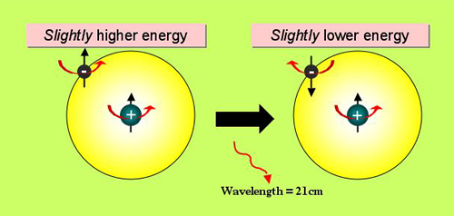

Cold interstellar gas does not emit radiation at visible wavelengths. However, in 1944 Dutch astronomers predicted that the neutral hydrogen making up the bulk of this material could be detected by observing a rare transition, known as the spin-flip transition, at radio wavelengths. It wasn’t until 1951 that equipment sensitive enough to detect this transition became available to radio astronomers, and today the spin-flip transition has found uses ranging from mapping out the strutcure of our own Galaxy to magnetic resonance imaging in medicine.
To understand how it works in astronomy, it is easiest to imagine that the proton and electron in a hydrogen atom are charged balls spinning on their own axes. A hydrogen atom in its lowest energy state has its proton and electron spinning in opposite directions. However, it is possible through collisions with electrons and other atoms, for the hydrogen atom to acquire a small amount of energy which may align the spin of its electron with its proton (by the laws of quantum mechanics, the two particles must be spinning in either the same or opposite directions. They cannot exist at an intermediate orientation).

With the spins aligned, the hydrogen atom is in a slightly excited state and, if left for a very long time (roughly 10 million years), the electron will spontaneously flip its spin orientation back to the lower energy configuration. The energy of the photon emited in this spin-flip transition is equivalent to the energy difference between the two spin states of the hydrogen atom. This is very small indeed, leading to a very long wavelength (21cm) for the emitted photon.
It may seem from the above that the probability of detecting cold hydrogen gas through this mechanism is very small. To start with, the collision to align the spins of the electron and proton in the hydrogen atom is a rare event in the low density environment of the interstellar medium. Then to wait for millions of years for the electron to flip its spin back to the lower energy configuration, it would seem that detection of this event would be unlikely. However, one must remember that there are a LOT of neutral hydrogen atoms in the interstellar medium, and at any one time some fraction of them will be in their slightly excited state.
The spin-flip transition can only be used to trace the distribution of neutral hydrogen in the Universe. For regions rich in molecular hydrogen (e.g. molecular clouds), astronomers must use a different tracer. This is generally the carbon monoxide molecule (CO) which has a characteristic emission at the shorter wavelength of 2.6 mm.